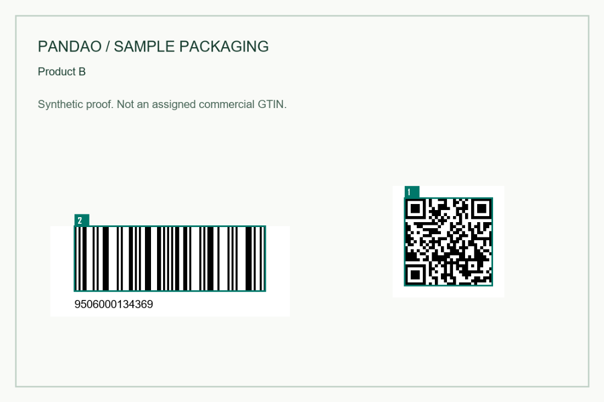

PACKAGING / PRE-APPROVAL
Two codes agree.
But is it the
right product?
Check every proof against your approved product list. Find swapped GTINs, conflicting codes, missing pages and repeated artwork before you approve the batch.
Your files stay on this device. No account. No upload.

Linear GTIN: 09506000134369
QR GTIN: 09506000134352
Approve the data
One CSV row for each file, page and product.
Check the whole batch
PDF, PNG and JPEG. Read the codes on each page.
Send a clear review
Numbered previews, page findings and a downloadable packet.
LOCAL BATCH AUDIT
From approved list to marked proof.
EAN-8, EAN-13 and UPC-A; QR or Data Matrix containing an uncompressed GS1 Digital Link. Up to 200 pages, 100 MB per file, 300 MB per batch.
Choose your files, or try the synthetic sample with deliberate mistakes.
WHO IT IS FOR
Many products.
One approval deadline.
For brand teams, artwork studios and print coordinators working across product variants. Keep the approved list separate from the proof so a wrong product cannot pass just because its two codes match.
Before you approve
“Matched” confirms supported code data agrees with your list. Check flagged pages manually. Unreadable or unsupported codes remain review items.
Use a physical barcode verifier for printed quality and a GS1 specialist for standards certification. This audit does not certify printing, company ownership or complete Digital Link syntax.